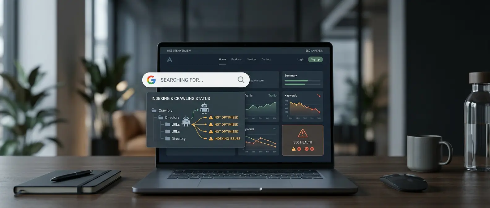

SEO y Google
Mi página web no aparece en Google: qué revisar y cómo solucionarlo
¿Tu página web no aparece en Google? Te explicamos cómo comprobar si está indexada, por qué puede no aparecer y qué puntos conviene revisar.
Leer el artículo →